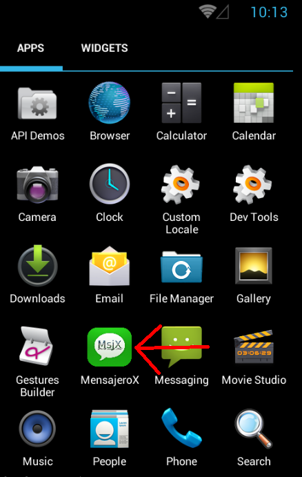
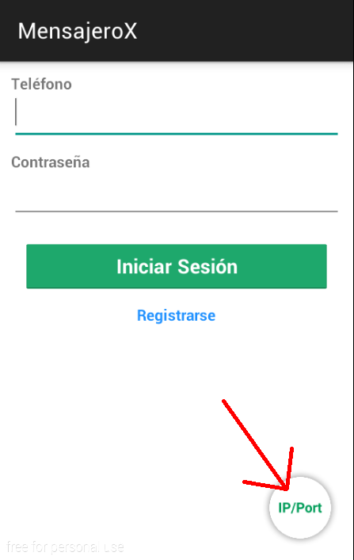
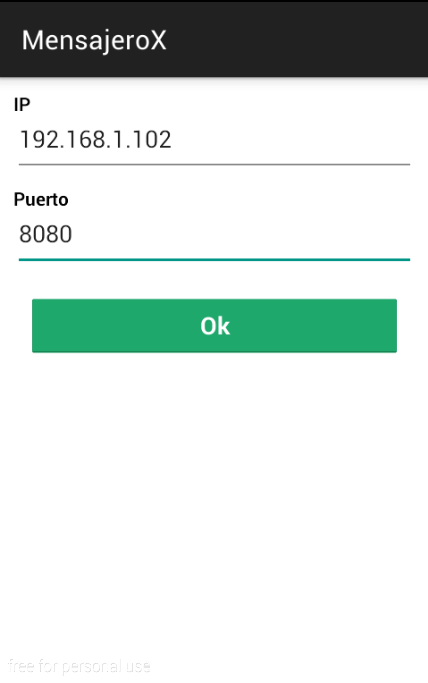
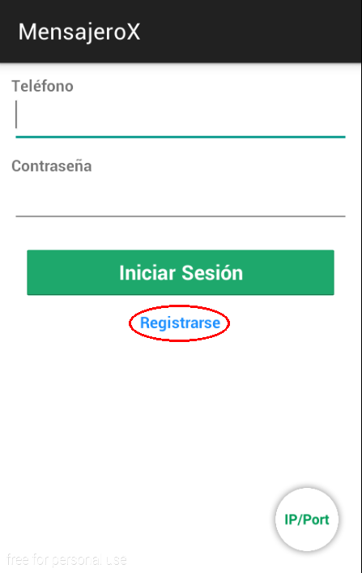
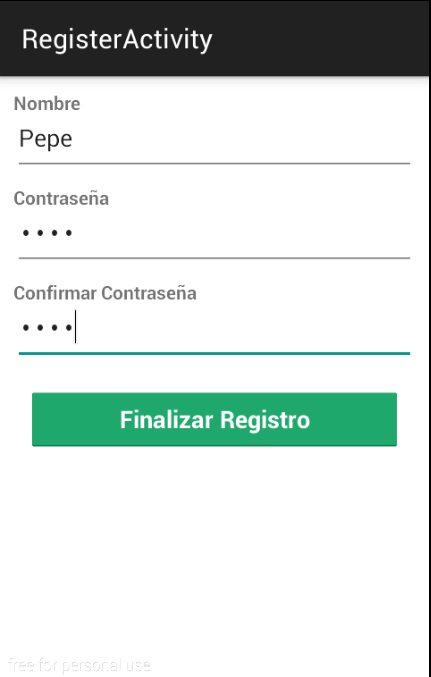
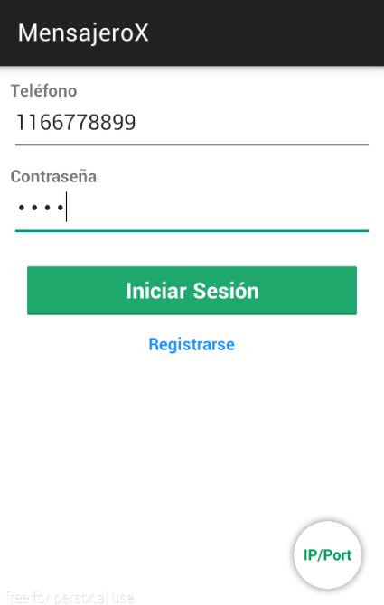

Manual de usuario para la aplicación MensajeroX.
La aplicación MensajeroX es una aplicación para smartphones con Android 4.1 (JELLY_BEAN) o posterior, que permite enviar y recibir mensajes con tus contactos a través de internet. Además de utilizar la mensajería en modo texto, los usuarios de la libreta de contacto pueden crear una lista de difusión para enviar mensajes de manera simultanea.
Para poder utilizar la aplicación, una vez instalada, seleccione el icono que se muestra a continuación en la imagen.
A continuación se muestra en detalle los pasos que debe seguir para poder ingresar al sistema.
Al iniciar la aplicación por primera vez, lo primero que debe hacer es ingresar la dirección de ip bajo la cual esta corriendo el servidor, y el puerto.
Para ello debe presionar el botón ip/port el cual se indica con un flecha (pantalla izquierda), se abrirá la pantalla para ingresar los 2 campos (pantalla derecha), una vez ingresados los datos, presione el botón Ok y retornara a la pantalla de inicio.
|  |  |
Para poder iniciar sesión, deberá registrarse en el sistema, para ello presione el botón Registrarse, el cual se encuentra enmarcado en rojo (primer pantalla).
Una vez en la pantalla de registro (segunda pantalla), deberá seleccionar el país al cual corresponde su código de área e ingresar su numero de teléfono.
Al finalizar, se mostrara una pantalla de confirmación de numero de teléfono (tercer pantalla), en la cual podrá confirmar el numero ingresado o editarlo en caso de haber ingresado un numero erróneo.
Por ultimo, deberá ingresar su nombre y una contraseña (cuarta pantalla), que le permitirá poder autenticarse en el sistema. Debido a que la contraseña es algo muy importante deberá confirmar la misma. Una vez finalizado presione el boton Finalizar y su registro estará completo.
|  |  |
Finalizado el registro de datos, sera llevado a la pantalla de inicio en donde podrá iniciar la aplicación.
De vuelta en la pantalla de inicio, ingrese su numero de teléfono y la contraseña con los cuales se registró y presione el botón Iniciar Sesión, si los datos están correctos podrá ingresar al sistema.
En esta sección se muestran las funcionalidades de la aplicación.
{kind=link}
{kind=link}
{kind=link}
{kind=link}
{kind=link}
{kind=link}
{kind=link}
{kind=link}